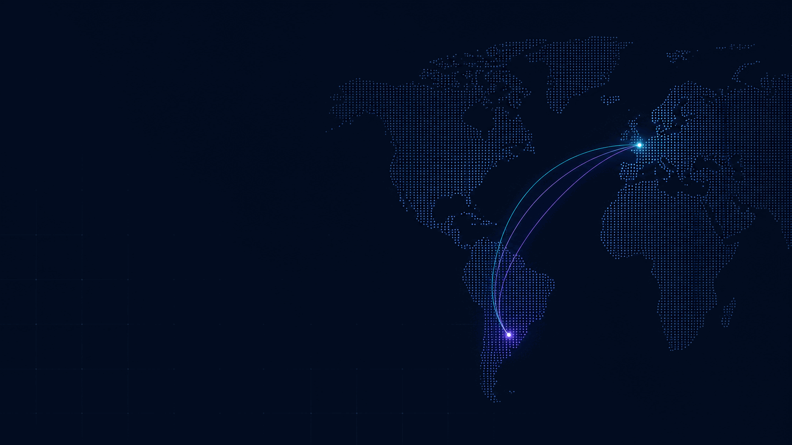

Sites vitrines qui rendent votre activité lisible.
Positionnement, structure, design responsive et parcours de contact, sans complexité technique inutile.
Explorer l’offre digitale →France · Europe · Amérique latine
Sites vitrines, organisation administrative et accompagnement de projets entre la France, l’Europe et l’Amérique latine.

Deux expertises, une même exigence
Nykuto accompagne les entreprises qui ont besoin d’un site clair, d’une organisation plus solide ou d’un relais pour un projet transfrontalier.
Positionnement, structure, design responsive et parcours de contact, sans complexité technique inutile.
Explorer l’offre digitale →Diagnostic, organisation administrative, recherche de solutions et coordination avec des prestataires spécialisés.
Explorer l’accompagnement international →Le rôle de Nykuto
Chaque mission commence par les faits : contexte, objectif, contraintes, parties prenantes et niveau de risque.
Comprendre le besoin réel et les attentes de décision.
Définir le périmètre, les livrables et les responsabilités.
Construire une méthode, un calendrier et les documents utiles.
Faire circuler l’information entre les bons interlocuteurs.
Remettre une solution exploitable et expliquer la suite.
Une collaboration professionnelle
Pas de promesse magique : une mission explicite, documentée et adaptée au niveau de maturité de votre entreprise.
Proposition, étapes, livrables et prix sont formalisés avant le démarrage.
Les informations nécessaires sont limitées au projet et peuvent être couvertes par un accord dédié.
Les activités réglementées restent confiées aux banques, PSP, avocats ou experts habilités.
Un point de coordination en français, portugais ou espagnol selon la mission.
Votre prochain point de départ
Un premier échange permet de vérifier le besoin, la faisabilité et le format d’accompagnement pertinent.